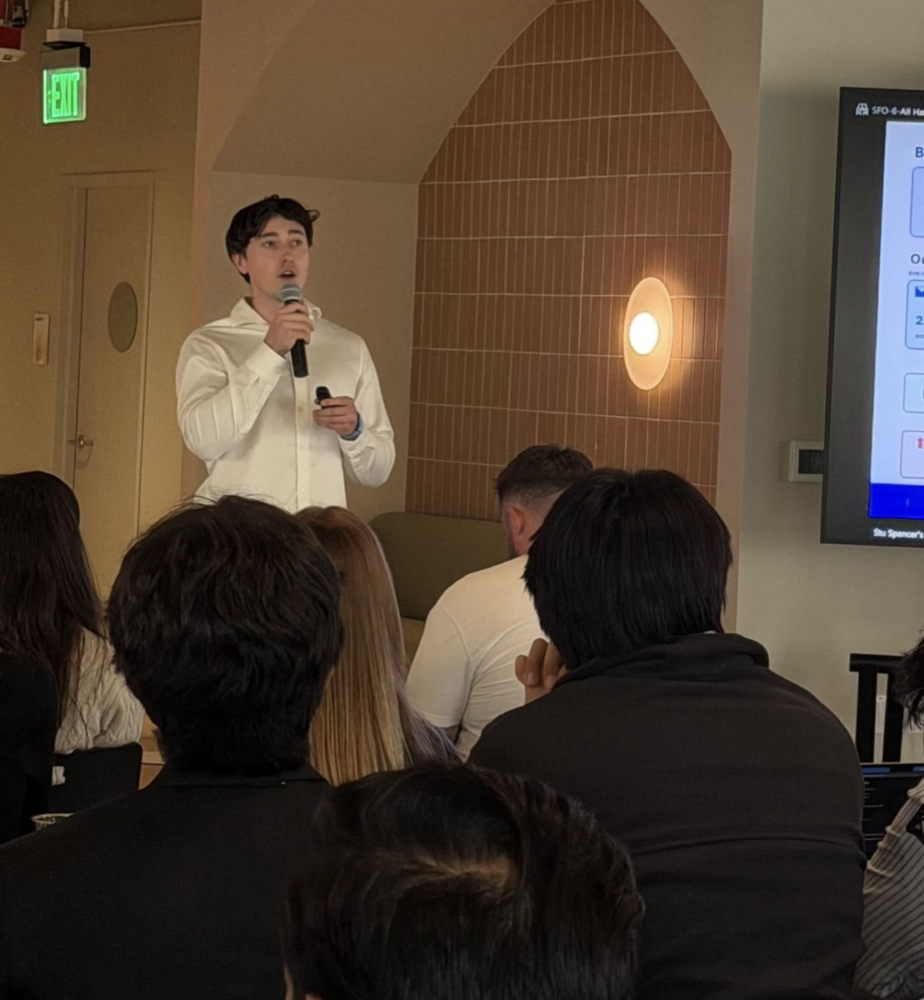

Happen Bank Collections Strategy
Explored how machine learning in Databricks could turn randomized collections history into individualized outreach decisions—choosing when, how, and whether to contact a borrower.

Presenting project results at the end of the internship. This page is a high-level portfolio summary and omits confidential implementation details.
Problem
Collections outreach was largely assigned without knowing which individual borrowers benefit from contact, when they are most receptive, or which channel is worth using. The presentation framed a “sleeping dogs” risk: roughly one third of borrowers may be actively harmed by over-outreach through fatigue, resistance, or unnecessary contact.
The project focused on the pre-charge-off window—borrowers at 1–120 days past due—where the team could help borrowers cure past-due balances while respecting compliance, contact eligibility, and daily operational capacity.
Approach
Eligibility first
Filtered ineligible, deceased, bankrupt, opted-out, and cooling-down borrowers before scoring, then applied compliance and capacity guardrails.
Next Best Action
Predicted the probability of a payment within seven days, using recency decay and inverse-propensity weighting before training a weighted XGBoost S-Learner.
Daily execution
Ranked feasible actions across dialer, SMS, push, email, physical letter, and no-contact options. The live design preserves at least one SMS or email touch every 14 days.
What the model found
Uplift was concentrated
Model quality was strong after calibration, and the ranking curve showed that most modeled uplift came from roughly 25% of borrowers. The remaining population was more likely to self-cure or charge off regardless of outreach.
Channel mix changed
The modeled plan front-loaded SMS and email earlier in delinquency. Under the presentation’s constraints, SMS was recommended at 164% of today’s level after the initial spike, while email was recommended at 78% of today’s rate.
Result
The holdout comparison estimated a 2.04% charge-off-rate reduction and approximately $20.35M in annualized value under the presentation’s assumptions, with a reported 95% bootstrap interval of $20.04M–$20.66M for the annual estimate. These are modeled results—not causal proof until a randomized live test—so the proposed rollout was staged: build a trusted Databricks base, validate with A/B testing, pilot on a monitored borrower population, then scale to downstream intensity, timing, and channel models.
The public summary intentionally excludes internal datasets, feature names, decision rules, and proprietary business context.